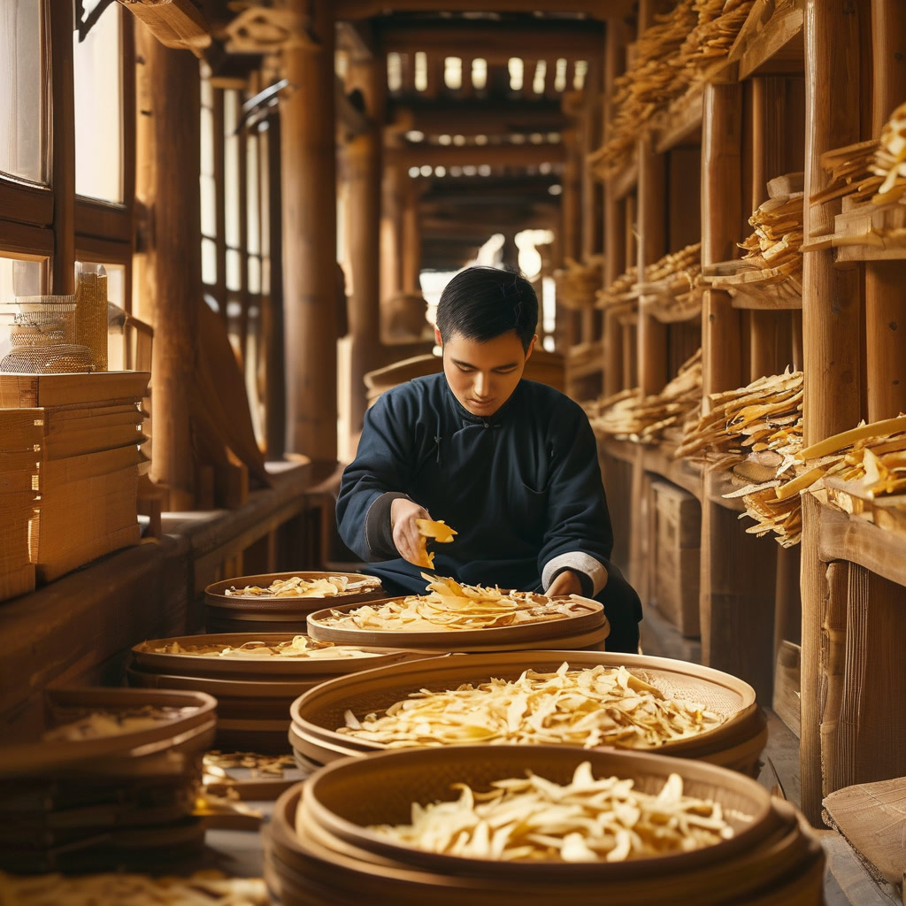
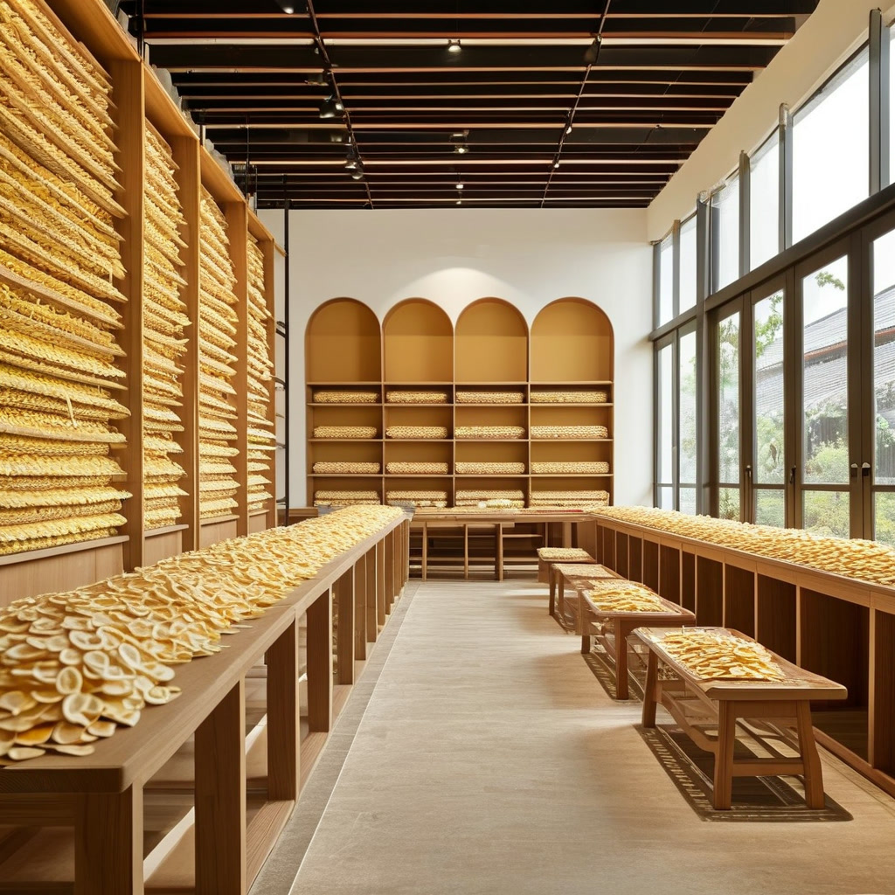
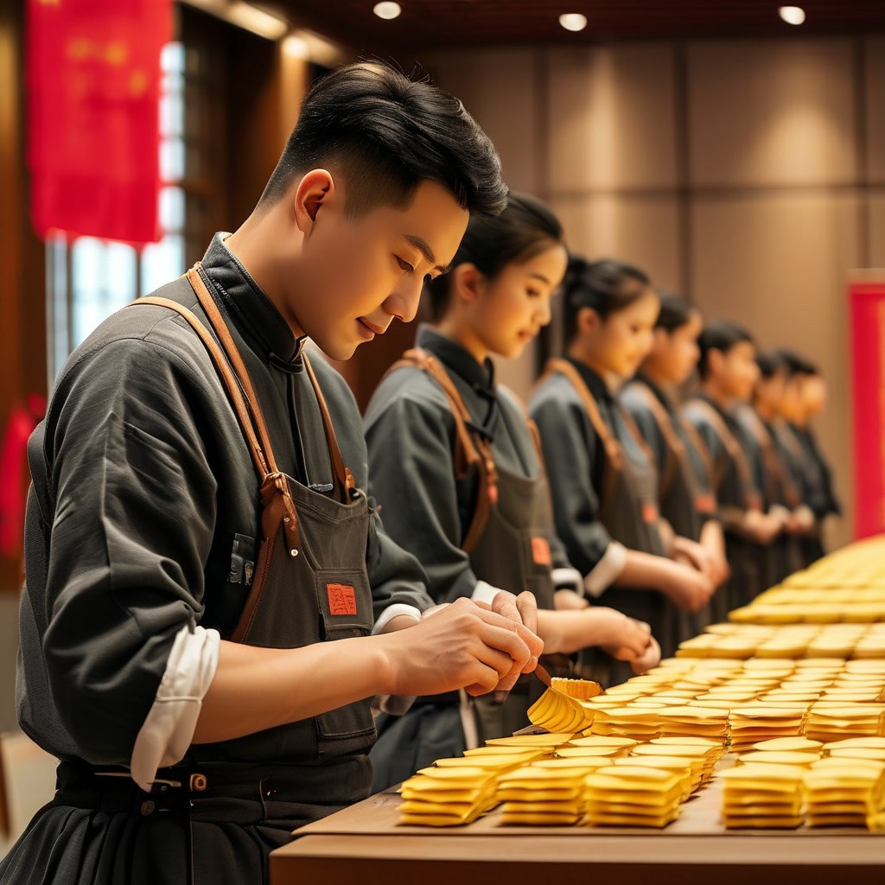
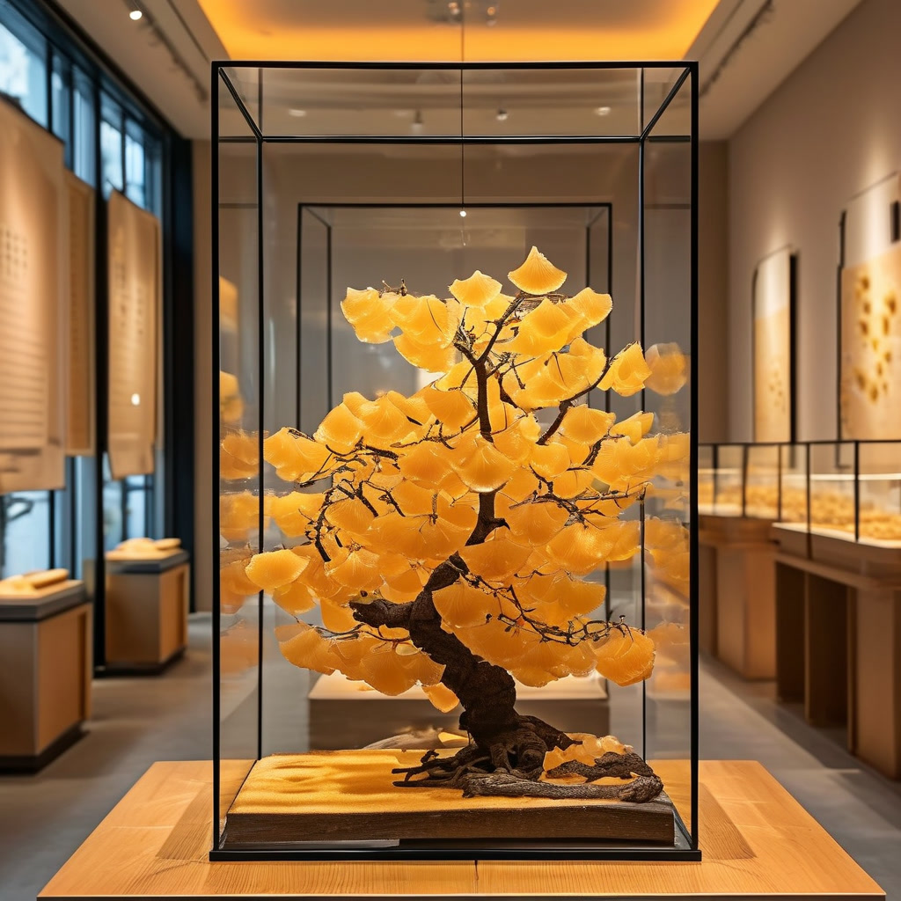

# 《滢滢姐的陈皮地图》⑩｜陈柏忠：8岁与陈皮同屋，国家级传承点样炼成
**资料说明｜故事化重构、非真实采访**
本文以江门市新会区文化馆、新浪财经《时代匠心》报道及人民论坛网公开报道为资料基础，采用故事化方式重构。文中对话属叙事表达，唔系陈柏忠嘅真实采访原话，亦不涉及私人家庭生活。
开场：8岁开始，同一屋檐下多咗一种香气
新会嘅午后，滢滢姐拎住一片陈皮，放到茶桌中间，问我：“你估下，一位国家级传承人，几多岁开始识得陈皮系咩？”
“大个先学？”我问。
“唔系㖞。”滢滢姐摇头，“公开资料讲，陈柏忠1978年生于新会，自8岁起就同陈皮瞓喺同一间屋。对一个细路仔嚟讲，陈皮唔系课本上嘅一课，而系屋企每日都有嘅气味。”
公开资料显示，陈柏忠是新会陈皮炮制技艺国家级传承人。以下文章只根据公开非遗资料及公开报道作故事化重构，对话属叙事表达，唔系真实采访原话。
一、第一幕：2004年入行，2007年创办新宝堂
公开资料记载，陈柏忠2004年起投入新会陈皮事业，2007年正式创办新宝堂陈皮有限公司。发展至今，已经系一家集种植基地、仓储基地、食品研发深加工、专卖店同电子商务于一体嘅新会陈皮实业开发公司。

“由家族手艺行到开公司，难唔难？”我问滢滢姐。
“公开资料冇讲佢当时心入面谂咩，所以唔可以乱补。”滢滢姐先提醒我，跟住话，“但可以肯定嘅系，呢一步将手艺由屋企带到市场：要有基地、要有仓储、要有产品、要有渠道。手艺唔再只系识做，仲要识得组织。”
值得留意嘅系，新宝堂创立于1908年，至今已经超过一百年历史。陈柏忠呢一代接过嘅，唔止系一套炮制流程，仲有一间老字号嘅延续责任。
二、第二幕：5000平方米传承基地，同广中医共建教学基地
2011年，陈柏忠投入500万元，自建新会陈皮制作技艺传承基地，面积达到5000多平方米，有效开展传承培训活动。2014年，佢再同广州中医药大学携手，共建教学基地，喺大学生中开展新会陈皮文化同制作技艺嘅挖掘同传承。

“点解要专登起个基地，仲要同大学合作？”我问。
滢滢姐答：“因为家族口耳相传，教得几多个？一个基地加一间大学，先至可以将手艺变成课程、变成教材、变成可以重复教嘅体系。传承唔系收几个徒弟咁简单，而系令套手艺离开某一个人都可以继续教落去。”
公开资料亦提到，十多年嚟，陈柏忠言传身教，先后培养咗82名优秀、专业嘅新会陈皮行业从业人员。呢个数字唔应该只当成绩睇，而应该睇成一条路：由个人熟练，行到可以批量培养行业人才。
三、第三幕：2026年新型学徒制，政企校一齐教
人民论坛网2026年9月8日报道，9月1日新型学徒制培训班开班仪式喺新宝堂举行。作为新会区陈皮行业率先开班新型学徒制培训项目嘅企业，新宝堂搭建“政府引导、企业主导、院校协同”嘅育人平台。新会区人社局、广东南方职业学院同新宝堂三方代表共同出席。

“学徒制同以前收徒有咩唔同？”我问。
“以前系师傅带徒弟，靠缘分同口碑。”滢滢姐话，“而家系政府出政策、院校出课程、企业出岗位同师傅，学徒有培训、有考核、有证书，仲有工资保障。公开报道提到，学徒获得证书之后，企业可以按每人每年5000到8500蚊标准申领培训补贴。呢个就系将传承变成制度。”
陈柏忠喺开班仪式上勉励学员夯实理论功底、深耕实操练习。对一位国家级传承人嚟讲，呢句说话唔系场面话，而系佢自己由8岁闻香、2004年入行一路行过嚟嘅体会：理论同实操，缺一不可。
四、第四幕：由家族守艺，到行业立规
《时代匠心》2026年报道提到，陈柏忠带领团队，将新宝堂百年积累嘅炮制技艺流程进行系统性梳理、记录同研究，编纂成册，将依赖个人经验嘅做法转化为可以学习、参考、验证嘅体系。2025年12月，国家新职业“陈皮生产工”职业标准编制工作喺江门启动，新宝堂获聘为标准开发顾问企业。

“由守艺到立规，系咪即系唔使老师傅？”我问。
滢滢姐摇头：“啱啱相反。标准唔系取代师傅，而系将师傅嘅经验变成大家都识用嘅语言。冇老师傅嘅实践，标准就系空纸；冇标准，老师傅嘅经验就留喺一个人身上。陈柏忠呢条路，正正系由‘我识做’行到‘大家识做’。”
报道亦提到，新宝堂创立广东新宝堂生物科技有限公司同制药公司，探索陈皮酵素、广陈皮中药饮片等产品，并带动300多家农户成立种植合作社。呢啲产业动作，本文只按公开报道转述，唔作效益判断，亦唔将企业宣传语当成事实。
一位国家级传承人做咗咁多嘢，最值得记住嘅可能只系一句：公开资料里佢讲过“我愿坚守陈皮一辈子”。守嘅唔只系一片皮，而系令呢片皮有人种、有人做、有人教、有人买得明嘅成条路。
使用提示
本文只作一般资料整理，不构成食品安全、营养、收藏投资或者医疗建议。选购、保存或者食用陈皮，应向正规渠道及有关主管部门核实。如有身体不适或者正在接受治疗，请咨询合资格专业人士。唔好将陈皮当成治疗方案。
常见问题
Q1：陈柏忠系咩级别嘅传承人？
江门市新会区文化馆公开资料将陈柏忠列为新会陈皮炮制技艺国家级传承人。本文只采用呢个公开级别认定，唔作额外评价。
Q2：新宝堂系几时创办嘅？
公开资料记载，陈柏忠2007年正式创办新宝堂陈皮有限公司；报道亦提到新宝堂创立于1908年，已有超过一百年历史。两个讲法分别指向公司主体同老字号源流，本文照原文转述。
Q3：5000平方米传承基地系咩嚟？
公开资料记载，2011年陈柏忠投入500万元自建新会陈皮制作技艺传承基地，面积达5000多平方米，用于开展传承培训活动。
Q4：新型学徒制系咩？
人民论坛网2026年9月报道，新宝堂作为新会区陈皮行业率先开班新型学徒制培训项目嘅企业，搭建政府、企业、院校协同育人平台，学徒培养目标以中级工、高级工及技师为主，期限一般1至2年。
Q5：文中对话系陈柏忠真实讲过嘅话吗？
唔系。本文采用嘅公开资料冇提供完整采访逐字稿，文中对话属故事化叙事表达，只为串起公开事实，唔应视为任何真人嘅原话。
来源
1. [江门市新会区文化馆：陈柏忠（国家级传承人）](https://www.xhqwhg.cn/pc/view.php?id=405&sid=0) 2. [新浪财经：陈柏忠荣登《时代匠心》封面人物](http://cj.sina.com.cn/articles/view/2574454223/99730dcf00101igqm) 3. [人民论坛网：新宝堂“新型学徒制”开新局](https://www.rmlt.com.cn/2026/0908/755540.shtml)